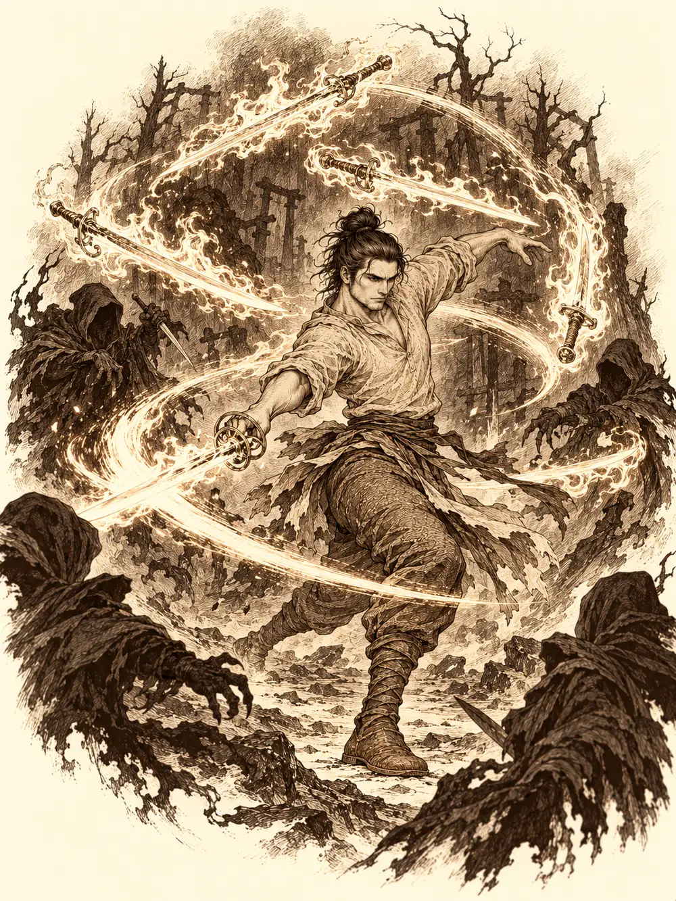

Capítulo 99
La sombra de Sirth
Libro VII · La Reina Cuervo
Maroxi llevaba semanas encerrado en su habitación entre frascos, libros de alquimia antigua y los manuscritos que había dejado Sirth. Probaba pociones, ungüentos y aceites, se los tomaba y anotaba el resultado. Algunos calmaban un poco los dolores; ninguno los curaba. Seguía vomitando, durmiendo mal y sintiendo un malestar que no se iba desde la misión en que habían cortado aquel hilo. Había pasado más tiempo drogado que en sus cabales, y lo sabía.
Banzo, en cambio, apenas paraba en la base. Después de lo del druida había ido a palacio a buscar a Rua, no había conseguido audiencia por cuestiones de protocolo que no entendía y había terminado presentándose ante la comandante Aka para entregarle su informe sobre la Puerta Negra. Volvía a menudo a vigilarla. Las armas de las estatuas habían bajado otro poco. La puerta seguía cerrada.
El tercero en llegar a Sho fue Hayate. Hacía meses que nadie lo veía. Tras la muerte de Sirth se había retirado a su templo a meditar, gastando la menor energía posible, pensando en su amigo y en si habría alguna forma, si no de verlo, al menos de seguir su camino. Un día se le apareció un cuervo y le dijo que, si quería respuestas, fuera a la capital. No estaba seguro de si había sido un sueño. Fue de todos modos.
Shizuka se había instalado en la base de Sho porque en Ukio pasaba demasiado tiempo sola. Recibió a Hayate con un interrogatorio y le señaló a Banzo, que era nuevo. Después se quedó mirando a Maroxi.
"Tiene la cara rara. Mira esas venas negras que tiene".
Hayate miró. Se parecían a lo que le había salido a Sirth, y a él mismo, en su día.
"Maroxi, ¿cuánto hace que tienes esas manchas?".
La carne del mago se movió y las manchas desaparecieron. Incluso pareció más joven.
"Ya sabes que me gusta practicar mis cambios de apariencia. Alguno se me habrá quedado a medias".
Banzo preguntó quién había sido Sirth. Shizuka se lo explicó a su manera: era uno de los jefes de los cazadores, se puso enfermo por ayudar a Hayate y a Erk y a los otros pájaros, tuvieron que ir a un sitio con unas mujeres muy raras que los pusieron a prueba, y Sirth se murió. Frunció los labios, pero no lloró. Hayate dijo que se sentía responsable y que llevaba tiempo intentando aceptarlo. Banzo les puso una mano en el hombro a cada uno.
Fue Hayate quien habló primero de las brujas. Quizá ellas pudieran ponerlos en contacto con la que guardaba el alma de Sirth. Él estaba dispuesto a pagar un precio muy alto por volver a hablar con su amigo, aunque fuera un día.
Sobre la mesa se arremolinaron unas sombras con forma de cuervo y, entre ellas, apareció una mujer estirada boca abajo, apoyada en los codos.
"Me estaban pitando los oídos. ¿Hablabais de mí?".
Era Chilia. Gateó por la mesa hasta Maroxi, le tomó la barbilla con dos dedos y lo miró de cerca.
"Ay, tú eres ese. Qué divertido va a ser esto".
Por el cuello del mago asomaron otra vez las venas negras y volvieron a esconderse. Banzo había agarrado a Shizuka, la había puesto a su espalda y había desenvainado. La Moira lo saludó con una sonrisa, saludó a la niña y se sentó en una silla como una invitada más.
Hayate le pidió hablar con su señora. Chilia preguntó qué querían de ella. Sirth estaba muerto, dijo, y su alma con su diosa; lo que pasaba en Kuroto, la diosa ya lo sabía. ¿Y qué podían ofrecer unos mortales a una divinidad? Hayate no lo sabía; quería un encuentro, y el precio lo pondría la diosa. Chilia hizo como que se marchaba. Luego se le ocurrió algo.
"Ya sé. Yo os enseño el camino y vosotros me dais a Shizuka".
"No".
Maroxi golpeó la mesa con las dos manos. Raíces negras le cubrían la cara entera y tenía los ojos inyectados de oscuridad.
"¿Cuántas almas quieres?".
Chilia se le quedó mirando encantada y señaló a los dos guardias de la puerta: las de esos dos estarían bien. Luego se volvió hacia Hayate y Banzo, curiosa.
"A ver qué hacéis".
Nadie entregó a nadie. Las venas retrocedieron, los ojos del mago volvieron a ser los suyos y se sentó como si no hubiera pasado nada. Ofreció sangre, la de las próximas tres personas que matara. La Moira no la quería. Entonces Maroxi sacó de su ropa un frasco pequeño y negro.
"Creo que es sangre de alguien que conoces".
"Ya sé de quién es". Chilia sonrió. "Pruébala".
Si los llevaba a hacer buenos tratos con su diosa, dijo él, la probaría. Trato hecho. Shizuka quiso ir con ellos y le dijeron que no, que aquel era un plano oscuro, lleno de trampas y de gente mala. Se sentó en la silla de morros, recordando todavía el humo del druida, y Hayate le prometió un recuerdo.
Antes de partir, Hayate apartó a Chilia y le preguntó hasta dónde estaba dispuesta a llegar ella. Hablaron del alma de Sirth. El arquero confesó que no le importaría cambiarse por él. Algo de su amigo se le había quedado dentro cuando lo revivió, y eso lo empujaba.
"A mí me pasa igual", dijo Maroxi. "Siento como si tuviera algo dentro".
"Tú tienes algo dentro", respondió la Moira. Y después fingió no haber dicho nada.
Chilia les tomó las manos y estallaron en una bandada de cuervos.
Llegaron mareados a una tierra sin luz. Había piedras por todas partes y árboles muertos, y todo tenía la misma forma, como si la luz no pudiera entrar del todo en aquel lugar. Alguien vomitó. Chilia estaba ya tumbada boca arriba en la rama de un árbol.
"Qué lentos sois. Pues la reina estaba... por ahí. O por ahí. Siempre me pierdo. Es que esto es todo igual".
Maroxi encendió su estoque para ver algo. La luz salió más débil de lo normal y la Moira cerró un ojo, molesta.
"Ay. Ya los oigo. Eso pasa por encender la luz".
Empezaron los susurros, primero lejos y luego cada vez más cerca, y en los bordes de la luz aparecieron y desaparecieron figuras, sombras que se movían a destellos, y detrás de ellas figuras encapuchadas cuyos rostros era mejor no mirar. Chilia se acomodó en su rama para ver el espectáculo.

Hayate disparaba flechas cargadas de rayo, pero las sombras se le aparecían a la espalda y los terrores lo obligaban a cambiar de sitio una y otra vez. Banzo se pegó a la luz y a sus compañeros; desde allí arrojaba el arpón y tiraba de la cadena para arrastrar a los enemigos hasta su hacha. Cuando una criatura le mostró el rostro, el miedo le hizo retroceder, y a su alrededor surgieron los espíritus de sus mayores gritándole que siempre estaba igual. Aun así volvió. Maroxi había empezado a bailar. Tarareaba mientras unas espadas llameantes giraban a su alrededor, se movía por todo el campo con la suya en la mano, lanzaba bolas de fuego, misiles de luz y rayos, y cada vez tenía la cara más negra y la sonrisa más ancha. Algunas de sus explosiones alcanzaron también a Banzo, que empezó a no saber a qué temía más, si a las sombras o a la expresión de su compañero.
Cuando cayó la última, Maroxi terminó el baile con una reverencia, las espadas flotantes se desvanecieron y solo le quedó la de la mano.
"Ay, qué bonito final. Hacía tiempo que no bailaba así. Banzo, cualquier día tenemos que echar un baile tú y yo".
El goliat le vio la cara a la luz y se estremeció. Chilia bajó del árbol.
"Ya me acuerdo del camino. Pero apagad esa luz".
Maroxi apagó el arma. Sus ojos y su piel volvieron a la normalidad.
Anduvieron mucho tiempo, sin saber cuánto. Pasaron dos veces por el mismo sitio. Y en una de esas vueltas, donde un momento antes no había nada, se alzó una catedral enorme, negra, de columnas oscuras, con cuervos en todas las repisas que los siguieron con la mirada. La puerta estaba hecha de plumas. Chilia la empujó con esfuerzo, quejándose de la espalda.
Dentro, una luz verdosa iluminaba esculturas de la Reina Cuervo: unas alzaban un cuervo al aire, otras sostenían hilos entre los dedos. Las hermanas de Chilia esperaban junto a la escalera. Al fondo, en un trono, estaba la diosa. Delante de ella, de rodillas y con la cabeza gacha, estaba Sirth. De su cuerpo salían muchos hilos, y uno de ellos iba hasta los dedos de la Reina.
Cuando Maroxi avanzó, una de las Moiras le cortó el paso.
"La diosa no quiere que te acerques, mortal".
Algo le salió al mago sin pensarlo.
"¿A quién llamas mortal?".
Las tres hermanas se miraron entre sí y luego miraron a su señora. La Reina Cuervo observó a Maroxi fijamente un buen rato y, con un gesto de la mano, hizo que la guardiana se apartara. El mago se volvió hacia sus compañeros sin saber por qué había dicho aquello.
Banzo se había sentado detrás, con unos huesos en las manos, preparando una consulta a sus espíritus. La diosa movió la mano con desgana y los huesos salieron despedidos por la sala. El goliat se encontró avanzando hacia ella sin quererlo.
"¿Esto es lo mejor que me habéis traído?".
"Ha venido el que tenía que venir", dijo Chilia. "El de azul".
Maroxi abrió la boca para hablar y la boca le desapareció de la cara.
"Aquí hablo yo, mortales".
La diosa se acercó al mago y empezó a tocarle la piel. Cada vez que lo rozaba, aparecían las venas negras.
"Ahí estás, escondido. Y bien, queríais verme".
Hayate preguntó por el destino de Sirth y si había alguna forma de devolverlo, aunque fuera un tiempo. Ella le contestó con desprecio que cuando alguien moría su alma iba con sus dioses, y que allí estaba. Le devolvió la boca a Maroxi, que quiso saber qué le estaba pasando.
"Todo está conectado, pequeño Maroxi. Se os puso una prueba y fallasteis. Pero no contábamos con algo".
Tiró de uno de los hilos y Sirth se movió como un trapo, sin voluntad, y quedó caído hacia atrás.
"Él llevaba un regalo dentro. Un dios malvado, digamos, puso huevos en su interior. Al morir, esos huevos pasaron a otro cuerpo. El más frágil, o el más fuerte, o el más fácil de manejar. Tú".
Le dijo que su cuerpo no aguantaría mucho; que lo mejor que podía pasarle era morir antes de sufrir o de servir de comida a lo que saliera de él. Quitárselo era fácil: bastaba una purificación. Pero los huevos saltarían al cuerpo más cercano, y de ahí a otro, hasta crecer lo bastante para romperse y quedar libres. Sirth los había retenido mucho tiempo; quizá fuera un elegido de aquel dios, no lo sabía. A ella tampoco le interesaba que esa presencia anduviera suelta por el plano material.
"Os pediré algo a cambio. A su debido tiempo. Cuando cumpláis lo que os pida, os devolveré a vuestro amigo. Y daos prisa si no queréis que el señor Maroxi sea la comida de un dios".
"Pero si no has pedido nada".
"Todo a su debido tiempo. Aguantarás unos días".
Movió un dedo y el símbolo sagrado de Hayate cambió: donde estaba el de su dios del viento apareció el de la Reina Cuervo.
"Tú serás mi conexión con los cazadores. Mis Moiras os seguirán vigilando".
Antes de que la diosa recogiera el hilo, Sirth alargó despacio la mano hacia Banzo, que estaba muy cerca, y un tirón lo devolvió a su sitio antes de tocarlo. No había mirado a nadie en ningún momento.
Banzo dio un paso adelante con la cabeza gacha. Las tres Moiras se tensaron. Le preguntó a la diosa si conocía al demonio Otakemaru; estaba a punto de llegar a Kuroto. Ella lo fulminó con la mirada: no sabían lo que afectaba a un dios. El goliat insistió. Pedía poder para proteger lo que más le importaba, y a cambio ofrecía su alma, o servirla eternamente. Las Moiras se rieron.
"Pequeño huérfano. Sirvientes eternos tengo de sobra. Primero demostradme que sois capaces de salvar a vuestro amigo. Después pensaré en tu oferta".
Hayate preguntó cómo podía contactar con ella.
"Pensaba que eras un clérigo más listo".
Chasqueó los dedos y volvieron a ser cuervos.
Aparecieron en la base de Sho. Shizuka seguía sentada en la misma silla.
"¿Ya estáis aquí? Si no os habéis ido ni un minuto. ¿Dónde está mi recuerdo?".
Hayate no traía nada y la niña levantó la mano y empezó a murmurar unas palabras que Maroxi reconoció enseguida: desintegrar. Se echaron todos a cubierto. Hayate le puso a toda prisa en la mano una piedra que brillaba, y Shizuka se detuvo a mirarla. Si la lanzaba, le explicaron, caería un rayo del cielo. Quiso probarla allí mismo. La convencieron de que esperara a estar en el bosque.
Hayate insistió en examinar a Maroxi. El mago se levantó la túnica: tenía el cuerpo entero cubierto de venas negras. El arquero le palpó el vientre por debajo de las costillas buscando algún bulto. No encontró nada. Maroxi se volvió primero gordo, para facilitarle el trabajo, y luego se convirtió en un perrillo. Tampoco había nada. Alguien propuso un ritual con humos y hierbas.
"Que no soy ningún conejillo de indias", protestó el perro.
En algún lugar más allá de la sombra, Sirth seguía arrodillado ante su señora, y nadie sabía todavía cuál sería la primera prueba.